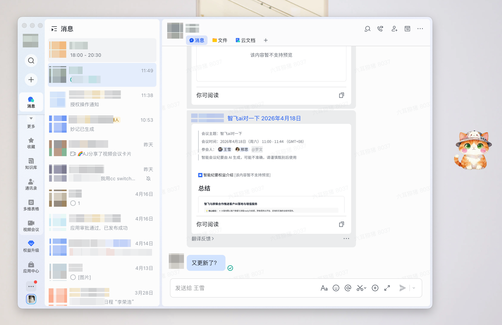
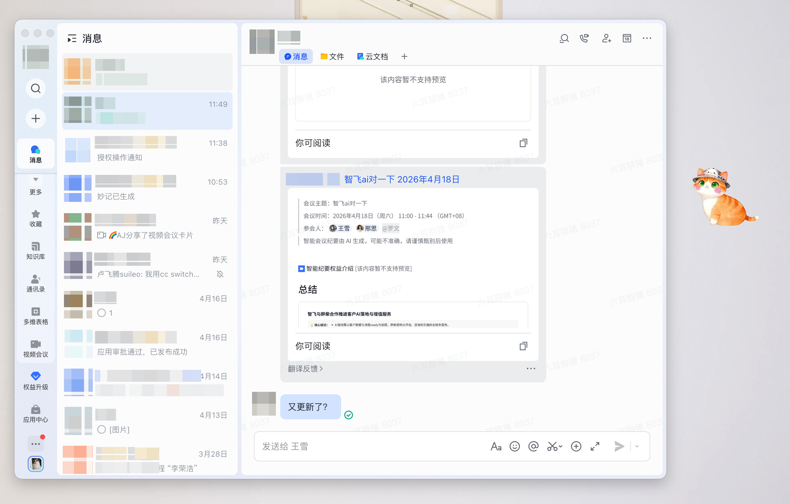
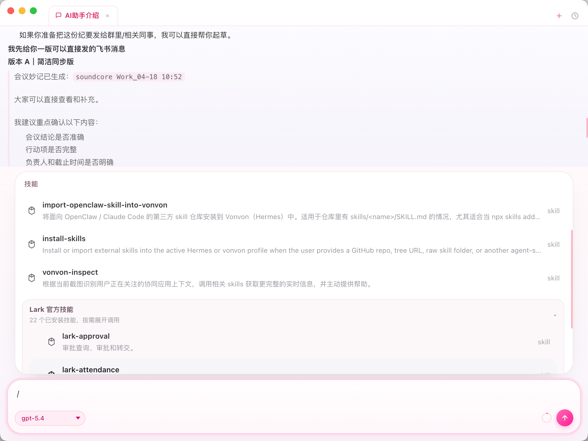
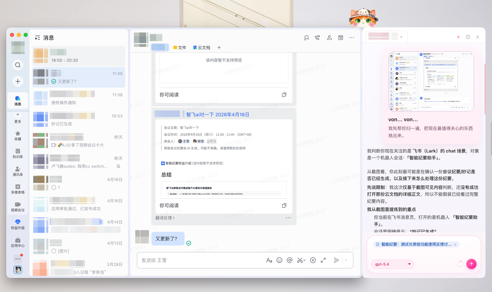
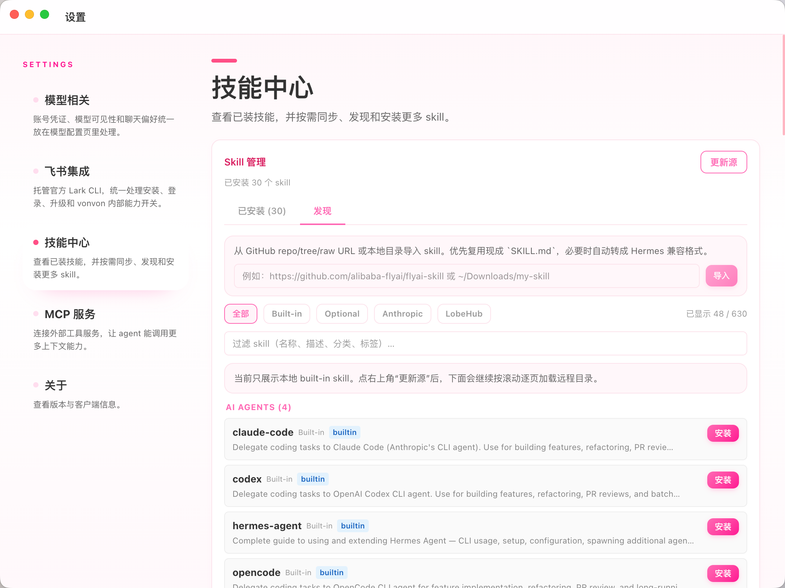
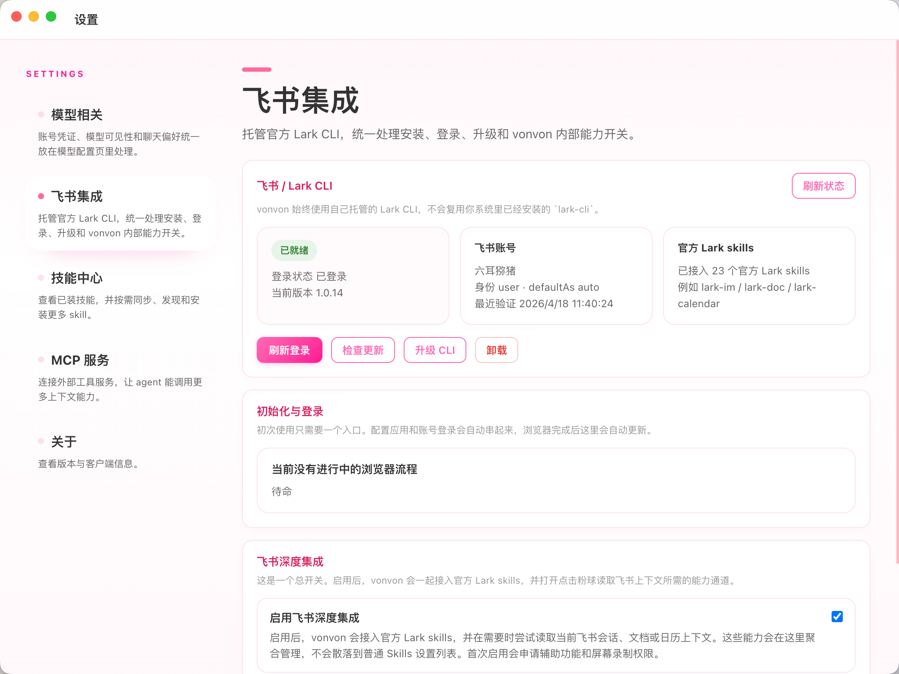

平时安静待命，不用它的时候就像桌面边上的一只小动物。
macOS 12+ / Apple Silicon / Feishu / Skills / MCP
几个最能说明它 气质 的瞬间。
Vonvon 不是把网页聊天窗口搬到桌面上，而是把一个更低存在感、 更会靠近场景、也更会跟着工作流一起变化的 AI 角色放进你的日常里。
靠近飞书右侧会进入贴边协作状态，把上下文拉回眼前。
通过 Skills 与 MCP，不只是“会回答”，还会慢慢长出新能力。
Main

日常主形态
随手唤起，一直都在。Dock to Feishu
靠近飞书时，会自动贴边。不是再开一个聊天浮层，而是像给当前协作现场额外长出一层 AI 侧栏。

AI Pet for macOS
陪你一起工作的小搭档
Q U I E T
Q U I E T
Q U I E T
Q U I E T
D O C K E D
D O C K E D
D O C K E D
D O C K E D
E V O L V E
E V O L V E
E V O L V E
E V O L V E
D O C K I N G D E M O
官网上也直接演示一次 “靠近飞书右边线 → 吸附到右上角 → 从 vonvon 里长出侧栏”。
这里不是摆拍图，而是参考桌面端真实状态机做的循环 demo： `floating → snapping → dockedExpanded → dockedCollapsed → detaching`。
-
01
Floating
自由漂浮，先靠近场景。
-
02
Snapping
接近飞书右边线时，身体先被“吸”过去。
-
03
Docked Expanded
滑到右上角后，sidebar 从 top left 向右长出。
-
04
Docked Collapsed
收起侧栏，但仍保持吸附在飞书上方。
-
05
Detaching
拖离吸附区后，重新回到漂浮状态。
W O R K S
会动、会贴边、会继续理解上下文的桌面 AI。
01
Desktop motion pet
桌面主形态
平时像一个轻轻呼吸的小角色待在屏幕边上，需要时再进入更完整的对话状态。

Independent
需要长任务时，再切进沉浸窗口。
02
Feishu side mode
飞书贴边协作
它知道什么时候应该只是待命，也知道什么时候该靠近你正在处理的协作现场。
03
Skill growth
能力会继续长出来
通过 Skills 和 MCP，它不是固定功能列表，而是会随着使用逐步变得更贴手。
M O T I O N S
参考 `yui540 / motions` 的方向，给这个站点加上一整套更轻、更有玩具感的动态语言。
Orbital
Breathing
Bouncing
Ribbon
VONVON
VONVON
Rotating
Floating cards
S C R E E N S
几个最像作品陈列页的界面瞬间。
日常主形态
需要时唤起，不需要时只留下轻微呼吸感。
飞书侧边协作
不止看截图，而是继续围绕当前上下文往下做事。
能力扩展
继续把它养成更顺手的样子。
深度集成
把权限、CLI 状态和能力开关放进同一个入口里。